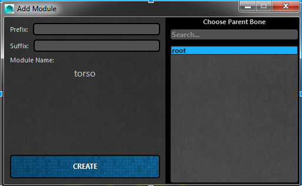

ART_AddModuleUI¶
Author: Jeremy Ernst
-
class
Interfaces.ART_AddModuleUI.ART_AddModule_UI(baseName, className, rigUiInst, parent=None)[source]¶ This class builds a UI used by the rig creator, and is called when a user pushed a module button to add to their rig. This UI presents options like prefix, suffix, and ability to specify the parent module bone.
-
__init__(baseName, className, rigUiInst, parent=None)[source]¶ Initialize the class, taking in the base name of the module to be added, the name of the class of the module to be added, and the instance of the rig creator UI. Then build the interface for the tool.
Parameters: - baseName – The base name of the module to be added, defined in the module class file at the top.
- className – The class name of the module to be added, so we can then initialize that module.
- rigUiInst – The instance of the rig creator UI, from which this function was called.
-
createModule()[source]¶ Instantiate our module class to create with the user specified name, creating the network node, building the Skeleton Settings UI for the module, adding the joint mover for that module (importing the joint mover file), and adding the joint mover to the outliner.
-